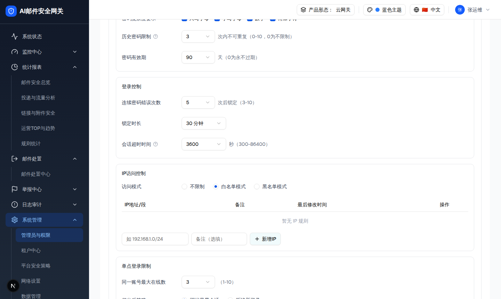
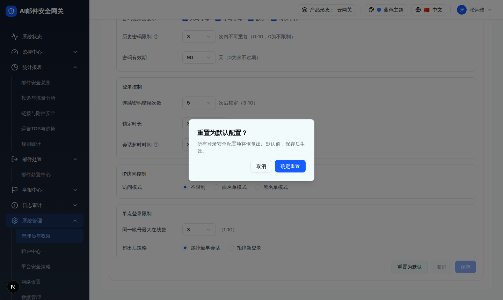

| 属性 | 规格 | 形态/角色差异 |
|---|---|---|
| 所属组件 | 2.4 登录安全 Tab（LoginSecurityTab） | [Base] 全形态共用 |
| 主文件 | admin-users/index.html | [Base] — |
| 触发路径 | 「访问模式」选白名单/黑名单 → 展开 IP 规则表 + 行内新增；点「重置为默认」→ 确认弹窗 | [租户管理员] 按钮文案为「重置为平台基线」 |
| demo 组件 | login-security-tab.tsx（IP 表条件渲染 ipMode!=="none"；isCidr 校验；<AlertDialog> 重置确认） | [Base] 控件一致；[Overlay] 策略数据按 scope |
| IP地址/段 | 备注 | 最后修改时间 | 操作 |
|---|---|---|---|
| 暂无 IP 规则 | |||

| # | 元素 | 说明 | 校验 | 形态/角色差异 |
|---|---|---|---|---|
| 1 | 访问模式 RadioGroup | 不限制 / 白名单模式 / 黑名单模式 | 非"不限制"→展开表 | [Base] 一致 |
| 2 | IP 规则表 | 列：IP地址/段 · 备注 · 最后修改时间 · 操作（删除）；空态「暂无 IP 规则」 | - | [Overlay] 规则按 scope 隔离 |
| 3 | 新增 IP Input | 占位「如 192.168.1.0/24」 | isCidr：IPv4 或 CIDR（掩码 0-32）；非法 → 「请输入正确的IP地址或CIDR格式…」 | [Base] 一致 |
| 4 | 备注 Input | 占位「备注（选填）」 | 选填 | [Base] 一致 |
| 5 | 新增IP 按钮 | 校验通过后加入表 + 清空输入 | 空 → 「请输入 IP 地址或 CIDR 段」 | [Base] 一致 |
| 6 | 删除（行） | 移除该 IP → Toast「已删除，可保存后生效」 | - | [Base] 一致 |
| 7 | 底部按钮 | 重置为默认 / 取消（dirty 时可用，还原 saved）/ 保存（dirty 时可用，700ms loading「保存中…」→「保存成功」） | 见 5.4 校验（会话超时 300-86400、连错 3-10、密码长度 8-32） | [租户管理员] 重置为平台基线且保存需基线校验 |
所有登录安全配置项将恢复出厂默认值，保存后生效。

| 视角 | 标题 | 描述 | 确定后 | 形态/角色差异 |
|---|---|---|---|---|
| 平台 | 重置为默认配置？ | 所有登录安全配置项将恢复出厂默认值，保存后生效。 | 还原 DEFAULT_LOGIN_POLICY → Toast「已恢复默认配置，请保存后生效」 | [单租户]/[多租户平台管理员] |
| 租户 | 重置为平台基线？ | 所有登录安全配置项将恢复为平台下发的安全基线，已加严的设置将被清除，保存后生效。 | 同上 | [多租户租户管理员] |
| 比对项 | demo 实际 DOM | 提取的 HTML | 是否一致 |
|---|---|---|---|
| IP 表条件渲染 | 选白名单后 ipMode="whitelist"，出现表头 IP地址/段·备注·最后修改时间·操作 + 空态「暂无 IP 规则」+ 新增行（占位 如 192.168.1.0/24、备注（选填）） | 同（137 节点态） | 一致 |
| dirty banner | 改值后顶部 .bg-amber-50「配置已变更，请保存」 | 同 | 一致 |
| 重置弹窗 | [role=alertdialog].sm:max-w-[360px]「重置为默认配置？…恢复出厂默认值，保存后生效。」 | 同 | 一致 |
| 底部按钮 | 重置为默认 / 取消 / 保存(bg-blue-600) | 同 | 一致 |